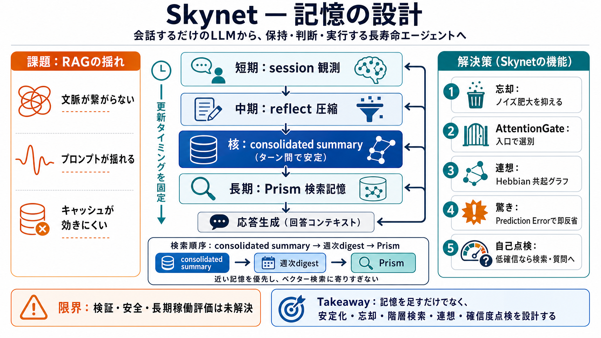

AI Agent Memory: Ebbinghaus Forgetting Curves & More - LinkedIn
Most AI agent memory: vector search + vibes. Mine: Ebbinghaus forgetting curves, reconsolidation windows, Zeigarnik pers…

LLMを「会話するだけ」から、長期に学習・保持・判断・実行できるエージェントへ近づけるアーキテクチャを提案します。
一般的なRAGは、ターンごとに検索結果が変わりやすく、文脈が“統合”されず断片的な知識が並ぶことがあります。
作者は、Elixirのアクター（GenServer）で“長寿命のエージェント”を組み、記憶の層構造を生物の比喩で設計します。
鍵は、記憶の更新タイミングを固定し、中核となるconsolidated summaryを“ターン間で安定”させることです。
検索は「consolidated summary → 週次digest → Prism」の順で行い、無限にベクター検索へ寄りすぎない設計です。
SoulはRAGの足し算ではなく、忘却・連想・驚き・直感・メタ認知を組み込み、「運用に耐える記憶と振る舞い」に寄せます。
情報の取り込み選別が長期品質を左右するため、忘却を設計に組み込みます（ソフト非表示→ハード削除）。
共起（Hebbian）をエッジとして蓄積し、次回想起ではグラフ探索で関連記憶も引き出します。
reflect/1の固定周期だけだと重大エラーの反省が遅れるため、Prediction Errorで即時反省へ切り替えます。
sense_confidenceで確信度を点検し、低確信なら推測を控えて検索や質問へ寄せます。
有望ですが、比喩と実装の因果、性能評価指標、そして安全性への具体回答（脅威モデルや運用手順）は十分ではありません。
Soulは「記憶を足す」より先に、更新の安定化・忘却・階層検索・連想・即反省・確信度点検を設計し、長期運用へ寄せます。
Most AI agent memory: vector search + vibes. Mine: Ebbinghaus forgetting curves, reconsolidation windows, Zeigarnik pers…
An agent memory architecture combines storage, retrieval, and control logic to determine what an AI agent remembers and …
This implementation experiments with a biological approach by using the Ebbinghaus forgetting curve to manage context as…
It's a Rust core with a Python CLI. One SQLite file stores everything -- text, 384-dim vector embeddings, JSON metadata,…
Discover how to build Semantic Search using LLMs and Qdrant DB in Rust! Learn how vector databases enhance AI search bey…